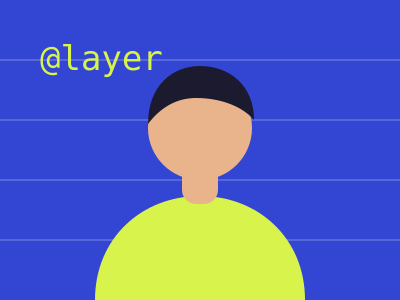
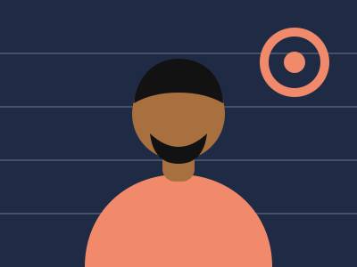
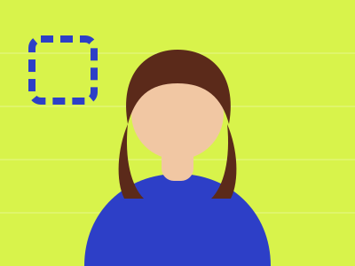
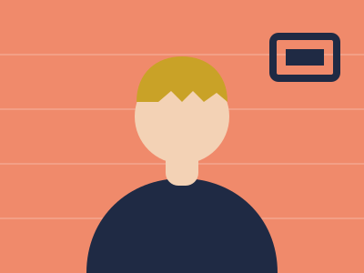
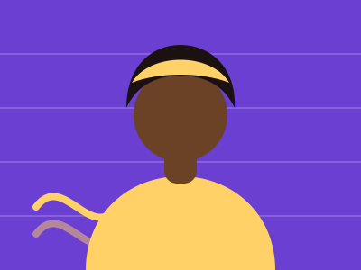
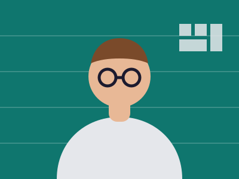

Inès Garnier
Lead front-end, Atelier Nord
Elle a migré un design system de 40 000 lignes vers les cascade layers, et ne regarde plus jamais en arrière.
Voir le talk d'Inès GarnierConférence CSS · 2e édition
Deux jours pour écrire un CSS qui tient dans la durée : cascade, design tokens, mises en page robustes et accessibilité.
01 — Deux jours, deux salles
Talks de 45 minutes en salle Grille, ateliers pratiques en salle Flex (30 places, sur inscription).
Hall
Inès Garnier
Salle Grille
Malik Benali
Salle Grille
Théo Lambert
Salle Flex
Hall
Sofia Marchetti
Salle Grille
Inès Garnier, Malik Benali, Hugo Perrin
Salle Grille
Hall
Théo Lambert
Salle Grille
Aïcha Diallo
Salle Grille
Hall
Hugo Perrin
Salle Grille
Sofia Marchetti et Aïcha Diallo
Salle Flex
Toute l'équipe Baseline
Terrasse
02 — Six voix du CSS
Des praticiennes et praticiens qui maintiennent du CSS en production, pas des démos.

Lead front-end, Atelier Nord
Elle a migré un design system de 40 000 lignes vers les cascade layers, et ne regarde plus jamais en arrière.
Voir le talk d'Inès Garnier
Designer de systèmes
Passionné de tokens, il fait le pont entre la maquette et le code depuis dix ans. Il anime chaque mois le podcast « Variables globales », où une équipe produit raconte comment elle nomme ses couleurs.
Voir le talk de Malik Benali
Experte accessibilité numérique
Auditrice RGAA, elle teste chaque interface au clavier avant même de l'ouvrir à la souris.
Voir le talk de Sofia Marchetti
Intégrateur indépendant
Il construit des composants qui s'adaptent à leur conteneur plutôt qu'à l'écran, et en a tiré un livre de recettes libre.
Voir le talk de Théo Lambert
Lead UX motion
Ancienne animatrice 2D, elle conçoit des animations qui guident sans étourdir, et part toujours de prefers-reduced-motion.
Voir le talk d'Aïcha Diallo
Ingénieur performance web
Il traque les recalculs de mise en page inutiles et les hauteurs fixées au pixel près.
Voir le talk d'Hugo Perrin03 — 450 places
Tous les pass incluent les pauses café, le déjeuner et l'accès aux vidéos des talks.
189 € TTC
Le plus choisi
299 € TTC
389 € TTC
79 € TTC, sur justificatif
Paiement sécurisé, facture au nom de votre entreprise sur demande. Billets transférables gratuitement jusqu'au 4 mars 2027.
04 — Bon à savoir
Une autre question ? Écrivez-nous à bonjour@baseline-conf.example.
Oui. La Halle des Rotatives est entièrement de plain-pied, la salle Grille est équipée d'une boucle magnétique et la keynote est interprétée en LSF.
Oui. Toutes les sessions de la salle Grille sont filmées, sous-titrées puis envoyées aux participants trois semaines après l'événement.
Le transfert est gratuit jusqu'au 4 mars 2027 : envoyez le nom de la nouvelle personne à la billetterie. La revente à un prix supérieur au tarif officiel est interdite.
Oui, avec un navigateur récent (Chrome, Edge ou Firefox) et un éditeur de code. Aucune installation supplémentaire n'est nécessaire.
Tram T1, arrêt « Rotatives », à 10 minutes de la gare Part-Dieu. Un parking vélo surveillé de 150 places est ouvert pendant les deux jours.
Le déjeuner est végétarien par défaut. Les options sans gluten ou vegan sont à préciser au moment de la réservation.